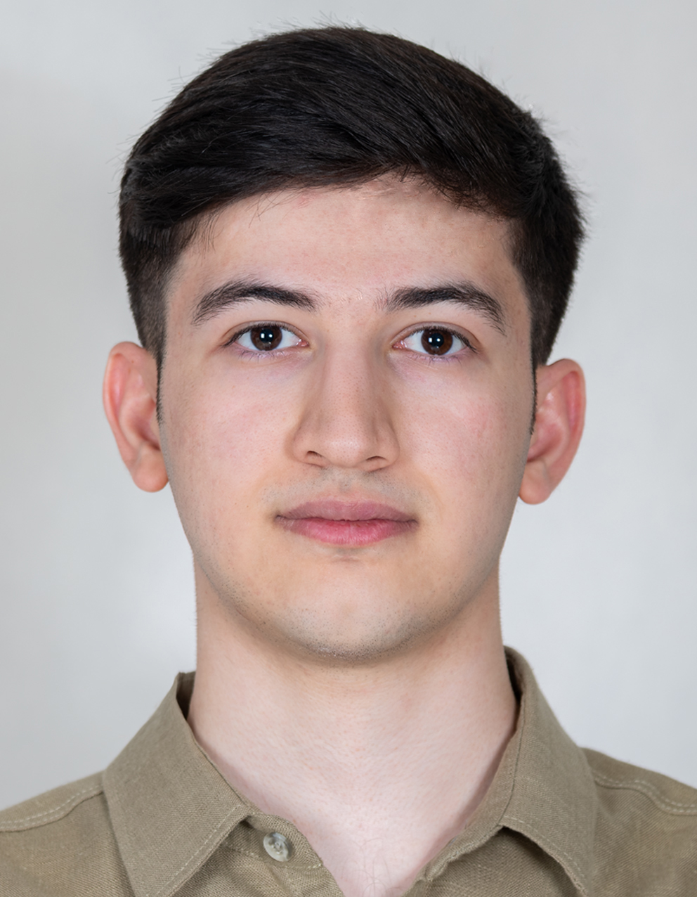

Real-Time 3D Hand Gesture Recognition
Developed a real-time 3D hand gesture recognition system using MediaPipe and PyTorch, achieving 93% accuracy.

Undergraduate Student in Computer Science
Fresh B.Sc. student at Shahed University, focusing on Machine Learning, Computer Vision, and Human–Computer Interaction. Passionate about building research projects that bridge theory and practical applications.
I am an undergraduate student in Computer Science at Shahed University, holding a GPA of 18.33/20 and First Class Honours. My research interests focus on leveraging computational methods to enhance human capabilities and deepen understanding of complex systems. I also enjoy exploring the theoretical and mathematical aspects of computer science.
Developed a real-time 3D hand gesture recognition system using MediaPipe and PyTorch, achieving 93% accuracy.
Project Idea: Develop a face recognition system using PCA and Eigenfaces for dimensionality reduction and face matching.
My Role: Independently implemented image preprocessing, eigenface extraction, whitening, projection, and distance-based recognition.
Outcome: Achieved 93.08% accuracy on the Yale Face Dataset.
Project Idea: Benchmark recommender system models on MovieLens-100K.
My Role: Implemented evaluation metrics and visualization for SVD-based recommendation analysis.
Outcome: Compared ALS, SVD, and LightGCN performance using RMSE, MAE, Precision@5, and Recall@5.
Project Idea: Develop a tree-based genetic algorithm to approximate mathematical functions and test it on regression tasks.
Outcome: Achieved accurate function approximation with interpretable results and reproducible code. Demonstrated the effectiveness of genetic algorithms for regression problems.
Project Idea: A multi-user task management system with role-based access, task history, comments, and time tracking.
My Role: Developed core functionality including user management, task creation and assignment, task history tracking, and role-based access control. Implemented database models and EF Core context for persistence.
Outcome: Created a fully functional task management system supporting Admin and Regular Users, with task histories, comments, and time logging. Demonstrated proficiency in C#, .NET 6, and EF Core.
Project Idea: Build a minimal compiler capable of parsing expressions and handling identifiers, numbers, and loops.
Outcome: Successfully created a functioning mini-compiler, demonstrating understanding of parsing techniques, compiler design, and operator precedence rules.
Project Idea: Build a terminal-based messenger application to enable real-time text communication between a client and a server over TCP sockets.
My Role: Independently designed and implemented both the client and server components in Python. Developed asynchronous message handling using multithreading for smooth, non-blocking communication.
Outcome: Created a reliable, lightweight messaging system demonstrating network communication, concurrency control, and socket programming principles.
Project Idea: Develop a 2D platformer game using the Python Arcade library, featuring tile-based levels, character animation, collectible items, and real-time camera movement.
My Role: Designed and implemented the full gameplay system, including physics, camera control, sprite animation, sound effects, and collision detection. Built multiple levels using Tiled and integrated all assets and logic in Python.
Outcome: Created a fully functional 2D game demonstrating object-oriented programming, event-driven design, and interactive graphics with Arcade.
Project Idea: Encode and decode register-machine programs using Gödel numbering. This project maps instructions to unique numbers and reconstructs programs from Gödel numbers.
My Role: Implemented the full encoding and decoding system, including instruction parsing, label and variable management, and prime-based Gödel number calculations.
Outcome: Built a functional tool that can represent and reconstruct register-machine programs as unique integers, demonstrating concepts from computability theory and number encoding.
Download my full CV, which includes academic achievements, research experience, selected projects, teaching assistant roles, and patents.
Download CVEnglish: IELTS Overall Band Score: 6.5 (Listening: 7.5, Reading: 6, Writing: 6.5, Speaking: 6.5)
Official IELTS Test Report Form: Document
This website was created to showcase my research, projects, and CV. Feel free to reach out via email or LinkedIn.